AnyPortrait > 메뉴얼 > Morph 모디파이어에서 핀 이용하기
Morph 모디파이어에서 핀 이용하기
1.4.0
AnyPortrait v1.4.0에 추가된 "핀 (Pin)" 툴을 이용하면 버텍스 모핑 작업을 훨씬 효율적으로 할 수 있습니다.
이 페이지에서는 Morph 모디파이어에서 핀을 이용하는 과정을 내용을 다룹니다.
메시에 핀을 추가하는 방법에 대해서는 아래의 메뉴얼에서 보실 수 있습니다.
- 핀 추가하기
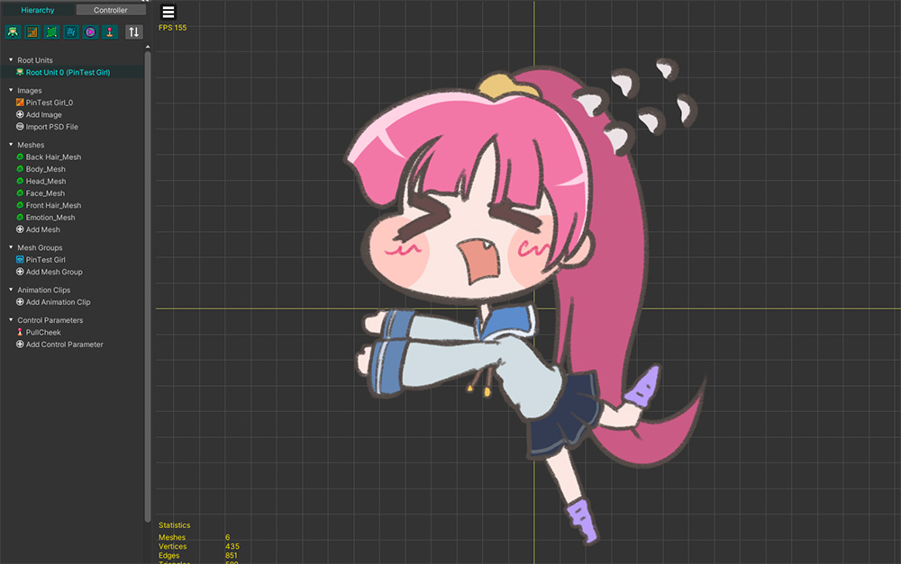
설명을 위해 귀여운 캐릭터를 준비해봤습니다.
이 캐릭터의 볼록한 볼을 살짝 잡아당기는 모습을 핀을 이용하여 만들어봅시다.

Morph 모디파이어로 핀을 움직이려면, 메시에 핀이 추가되어있어야 합니다.
(1) 메시를 선택합니다.
(2) Pin 메뉴를 선택합니다.
(3) 핀들을 이미지에 맞게 추가하고 연결합니다.

같은 방식으로 버텍스 모핑의 대상이 될 메시들에 핀들을 추가합니다.

모디파이어를 제어하기 위해서 위와 같이 컨트롤 파라미터를 생성했습니다.

(1) 메시 그룹을 선택합니다.
(2) Modifier 탭에서 Add Modifier 버튼을 누릅니다.
(3) Morph (Controller) 모디파이어를 선택하고 (4) Select 버튼을 누릅니다.
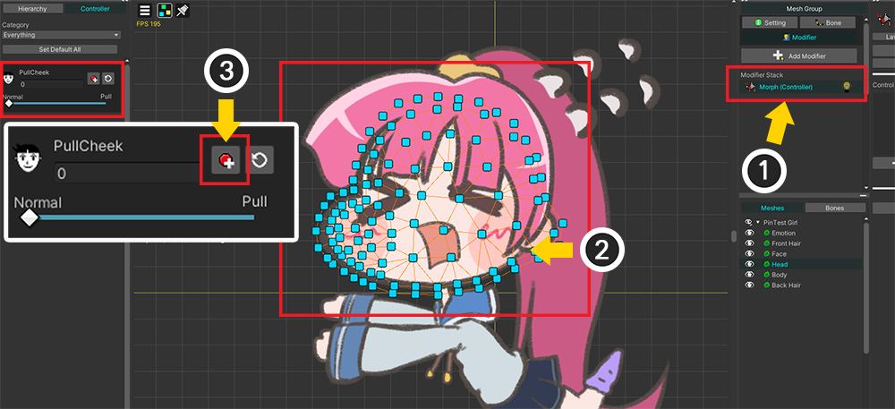
(1) 추가된 Morph 모디파이어를 선택합니다.
(2) 메시를 선택합니다.
(3) 화면 왼쪽의 Controller 탭에서 컨트롤 파라미터 UI에서 키를 추가하는 버튼을 누릅니다.
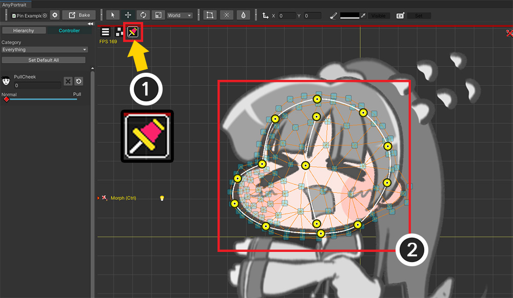
편집 모드를 켜고 메시를 선택해도 기본적으로는 핀이 보여지지 않습니다.
(1) 편집 대상을 버텍스가 아닌 핀으로 변경합니다. (단축키 : Alt+T )
(2) 선택된 메시의 핀이 작업 공간에 보여집니다.

컨트롤 파라미터에 따라서 캐릭터의 볼이 잡아당겨지도록 만들어봅시다.
(1) 컨트롤 파라미터 UI의 슬라이더를 움직여서 새로운 키를 만듭니다.

핀들을 움직여서 위와 같이 모양을 바꿀 수 있습니다.
메시에 많은 버텍스들이 있지만, 소수의 핀을 이용함으로서 작업 시간을 크게 단축할 수 있습니다.
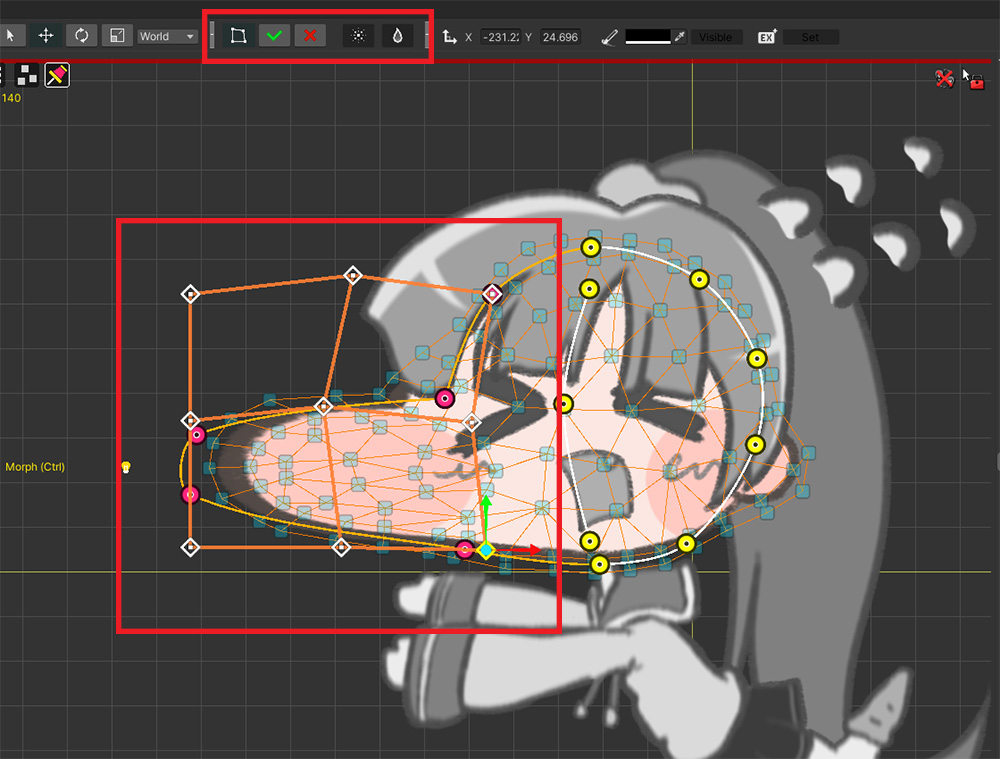
버텍스 편집과 동일하게 "FFD, Soft Selection, Blur" 도구를 이용하여 핀을 편집할 수도 있습니다.

또한 복수개의 메시의 핀들을 동시에 편집하는 것도 가능합니다.
(1) 다른 메시들을 선택하고 (2) 모디파이어에 등록합니다.
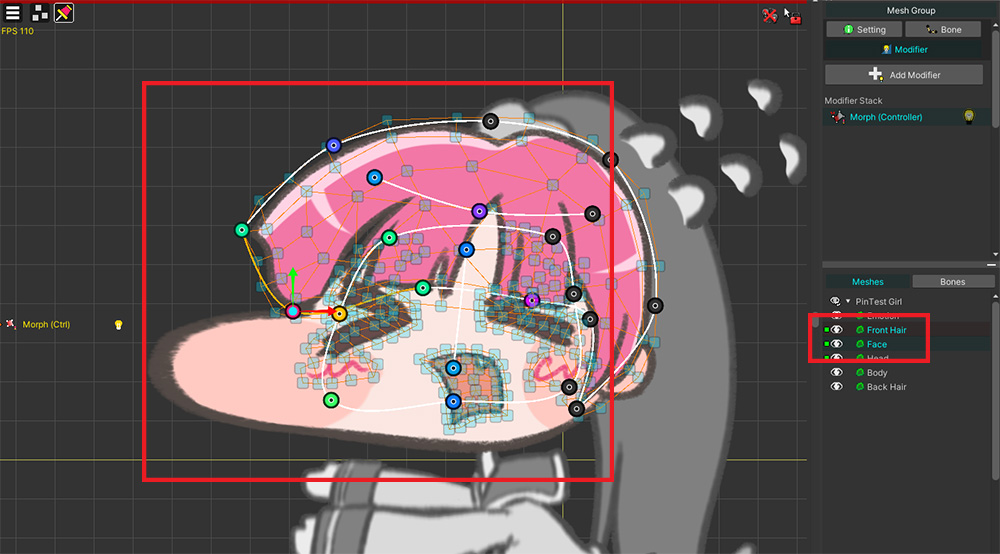
두개의 메시들의 핀을 동시에 편집하면 작업을 더욱 효율적으로 할 수 있을 것입니다.

물론, 이 상태에서 버텍스를 이용하여 세밀하게 편집할 수 있습니다.
핀을 이용하여 대강의 형태를 만들고 버텍스를 이용하여 마무리하는 것이 좋은 방법일 것입니다.
(1) 편집 대상을 버텍스로 변경합니다.
(2) 버텍스를 선택하고 이동시켜서 메시의 형태를 변형합니다.
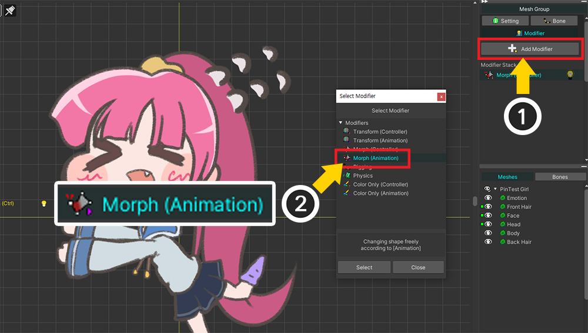
애니메이션용 모디파이어에서도 핀을 이용할 수 있습니다.
(1) Add Modifier 버튼을 누르고 (2) "Morph (Animation)" 모디파이어를 추가합니다.

(1) 새로운 애니메이션을 추가합니다.
(2) 추가했던 Morph (Animation) 모디파이어를 타임라인으로 등록합니다.
(3) 메시를 타임라인 레이어로 등록합니다.
(4) 편집 모드를 켜고 키프레임을 추가합니다.
(5) 편집 대상을 핀으로 전환합니다.

위와 같은 방식으로 애니메이션에서도 핀을 이용하여 메시를 편집해보세요!
Morph 모디파이어에서 핀이 동작하는 방식과 특징
얼핏 핀은 마치 본을 이용한 "리깅 (Rigging)"과 같은 방식으로 동작하는 것처럼 보입니다.
하지만 본이 Transform 모디파이어에 의해서 편집되는 반면에 핀은 Morph 모디파이어의 대상이 되는 점에서 어떤 차이가 있음을 예상할 수 있습니다.
실제로 핀에 의한 버텍스의 움직임을 계산하는 것은 일반적인 버텍스 모핑이나 리깅에 비해 훨씬 복잡합니다.
따라서 이 편리한 기능을 게임 중에 높은 성능으로 사용하기 위해서는 리깅과 다른 방식으로 데이터가 저장되고 활용되어야 했습니다.

핀 데이터가 Bake 과정에서 어떻게 바뀌는지에 관한 그림입니다.
에디터에서의 Morph 모디파이어는 버텍스와 핀에 대한 데이터를 모두 가지고 메시의 형태를 계산합니다.
하지만 Bake를 하면 핀 데이터는 버텍스 데이터로 합쳐집니다.
이러한 연산을 통해서 게임에서의 Morph 모디파이어에서는 복잡한 핀 연산은 하지 않고, 오직 버텍스 연산만 빠르게 수행하여 높은 성능을 유지할 수 있는 것입니다.
"핀에 의한 버텍스 움직임"을 미리 계산하여 Bake하는 것은 최적화에 도움이 되지만, 이로 인하여 보간 연산에 변화가 생기게 됩니다.
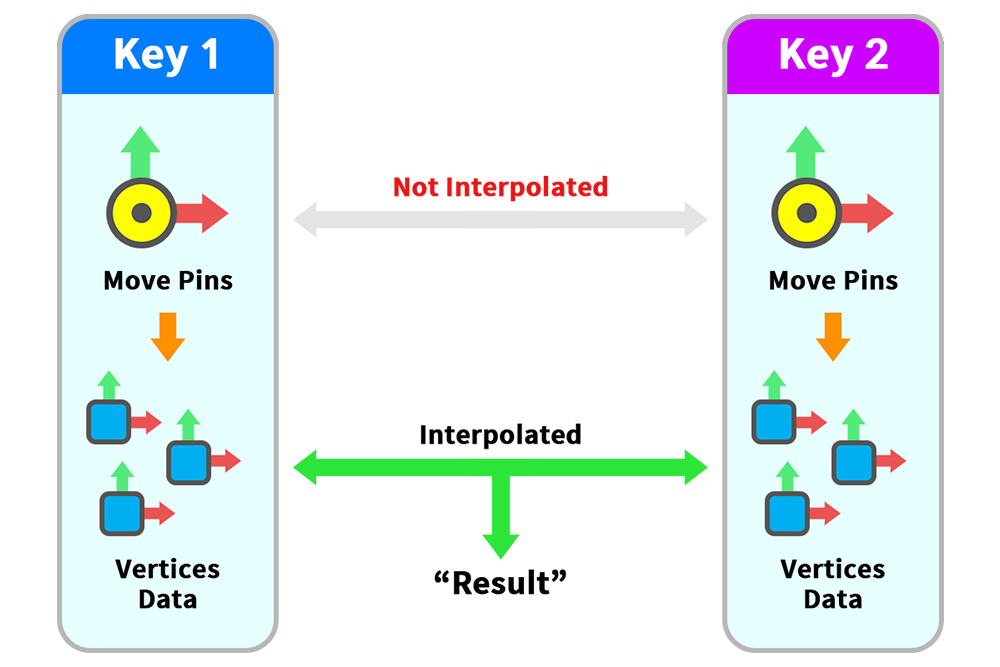
두개의 키에서 핀의 움직임은 바로 보간되지 않습니다.
Bake를 하면 핀들은 존재하지 않기 때문에, 보간 연산의 대상이 될 수 없기 때문입니다.
먼저, 각각 키에서 핀에 의한 버텍스들의 위치가 먼저 계산됩니다.
그리고 변환된 버텍스 위치 데이터들간의 보간이 연산됩니다.
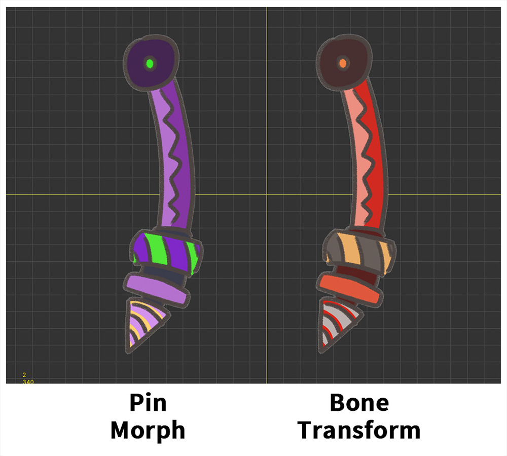
서로 다른 방식으로 같은 형태의 메시들이 비슷하게 움직이도록 만들어보고 그 차이점을 비교해봅시다.
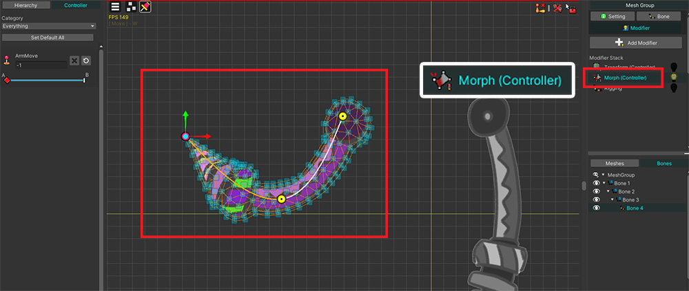

왼쪽의 메시에는 핀과 Morph 모디파이어를 이용하여 움직이는 기법을 적용했습니다.
반면, 오른쪽 메시에는 본과 Transform/Rigging 모디파이어를 이용하여 움직이는 기법을 적용했습니다.
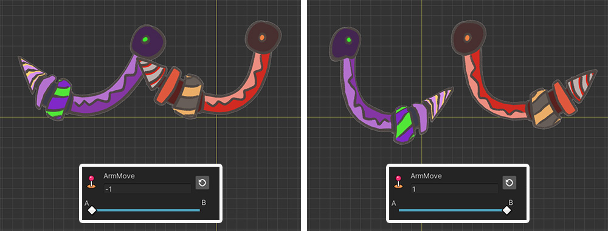
서로 다른 기법으로 만들었지만, 컨트롤 파라미터의 두개의 키에서의 모습은 거의 같아보입니다.
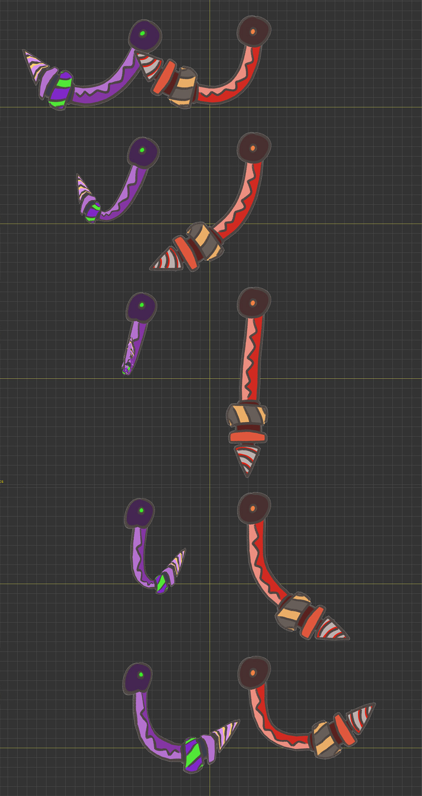
하지만 컨트롤 파라미터를 움직여보면 큰 차이를 확인할 수 있습니다.
본에 의해 움직이는 오른쪽 메시는 적절히 회전하여 움직이는 것을 볼 수 있습니다.
핀에 의해 움직이는 왼쪽 메시는 움직이는 도중에 매우 이상한 형태를 가지는 것을 볼 수 있습니다.
본의 "회전"이라는 정보가 없이 오직 "선형 보간"만 하기 때문에 위와 같은 결과가 나타나는 것입니다.
핀과 본은 비슷해보이더라도 결과에 큰 차이를 보이기 때문에, 사용 목적에 따라 다르게 이용되어야 합니다.
따라서, 버텍스 모핑의 보조 도구로서 핀을 활용되는 것이 가장 권장됩니다.
다른 모디파이어를 켜고 작업할 수 없어요!
핀 툴은 버텍스와 다르게 Rigging 모디파이어의 영향을 받지 않습니다.
핀 편집 상태에서 가장 빈번하게 사용하는 Transform 모디파이어와 같이 사용하는 것이 오히려 작업을 혼란스럽게 만드는 내부 테스트 결과가 있었습니다.
따라서 핀 편집 상태에서는 예외적으로 편집 모드에서 다른 모디파이어를 동작하는 옵션(관련 페이지)이 꺼지도록 구현을 한 상태입니다.
이 부분에 관련하여 피드백을 주시면 사용성 개선에 참고하겠습니다.